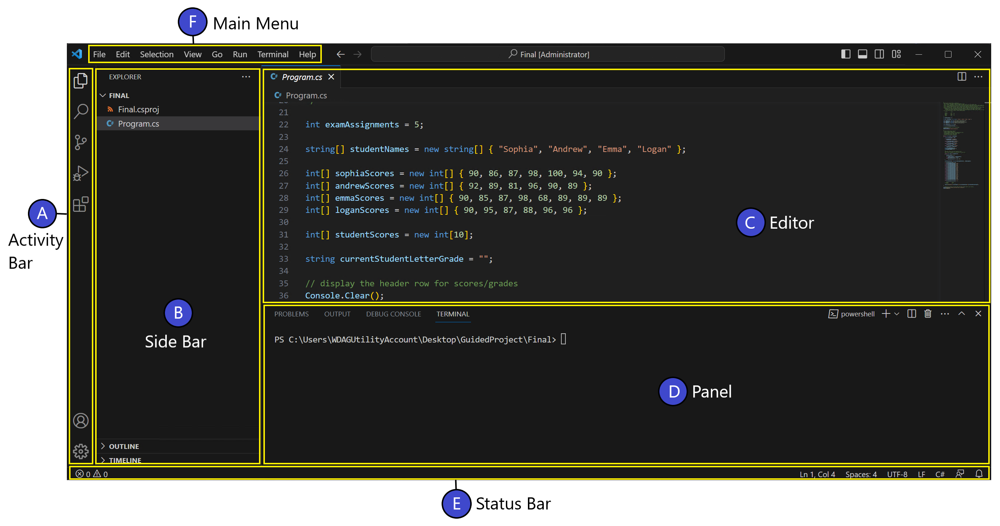

Visual Studio Code 알아보기
Visual Studio Code 소개
Visual Studio Code는 코드 편집기입니다. 이 편집기의 사용자 인터페이스와 레이아웃은 다른 많은 코드 편집기와 유사합니다.
- 왼쪽 사이드 바(Side Bar): 인터페이스의 왼쪽에는 사이드 바가 있으며, 코드 프로젝트의 파일과 폴더에 접근할 수 있습니다.
- 오른쪽 편집 영역(Editor Area): 인터페이스의 오른쪽에는 편집 영역이 있습니다. 애플리케이션 파일의 내용을 확인하고 편집할 수 있습니다.
Visual Studio Code 사용자 인터페이스의 주요 영역 이해하기
Visual Studio Code의 사용자 인터페이스는 다음의 6가지 주요 섹션으로 구성됩니다. 아래 다이어그램과 설명을 통해 각 섹션의 역할을 이해해봅시다.
A. 액티비티 바 (Activity Bar)
- 위치: 창의 왼쪽 가장자리의 세로로 좁은 막대.
- 기능: 보기(예: 탐색기(Explorer), 확장 프로그램(Extensions) 등)를 전환하거나, 상황에 따라 필요한 지표를 표시합니다.
B. 사이드 바(Side Bar)
-
위치: 액티비티 바의 오른쪽.
-
기능: 도구와 리소스를 제공하는 다양한 뷰를 포함합니다.
예: EXPLORER(탐색기) 뷰는 코드 프로젝트를 작업할 때 매우 유용합니다.
C. 편집기(Editor)
-
위치: 창의 중앙 영역.
-
기능: 파일을 편집하는 공간입니다.
여러 편집기를 열어 수직 또는 수평으로 나란히 배치할 수 있습니다.
D. 패널 영역(Panel Area)
- 위치: 편집기 영역 아래쪽.
- 기능: 출력 정보, 디버그 정보, 오류 및 경고, 통합 터미널 등 다양한 패널을 표시합니다.
E. 상태 바(Status Bar)
- 위치: 창의 맨 아래쪽 수평 막대.
- 기능: 열려 있는 프로젝트와 편집 중인 파일에 대한 정보를 제공합니다.
F. 메인 메뉴(Main Menu)
- 위치: 애플리케이션 창의 맨 위.
- 기능: 파일 저장, 코드 편집, 실행 등 다양한 작업을 수행할 수 있는 메뉴 옵션을 제공합니다.